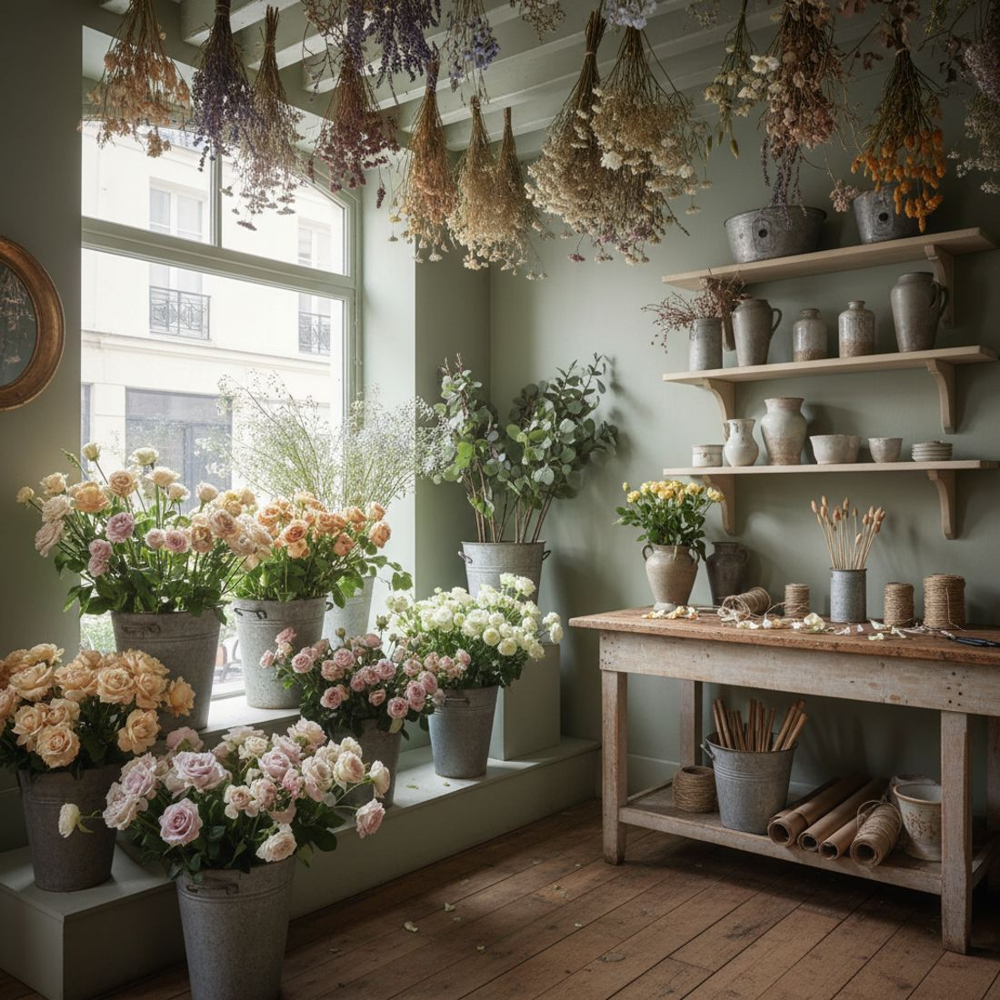
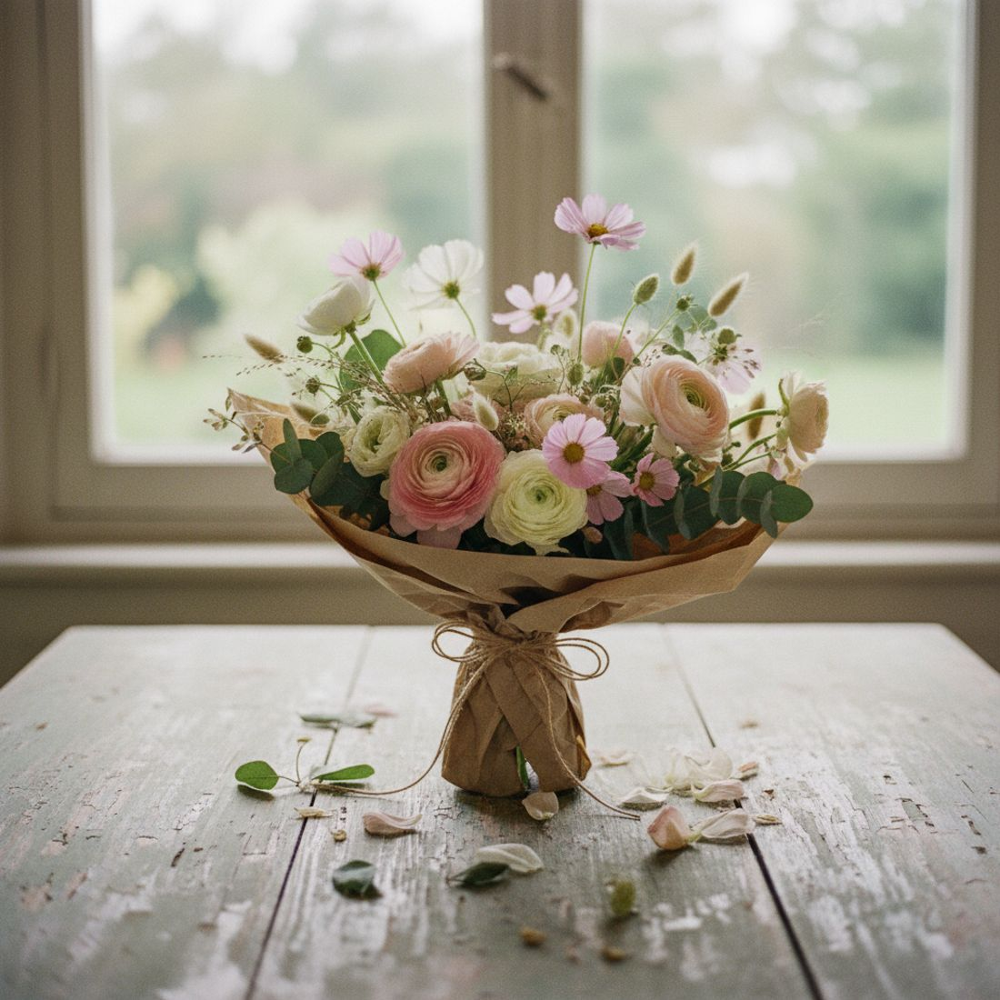
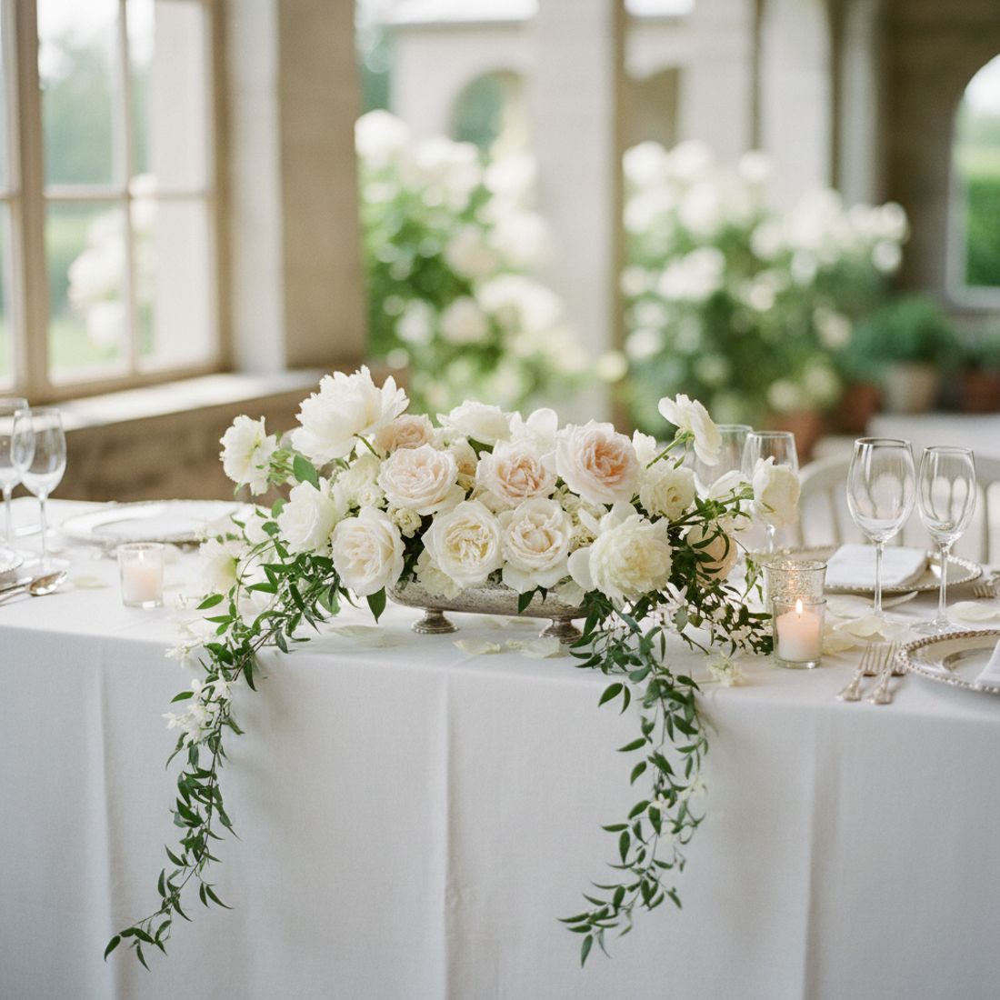
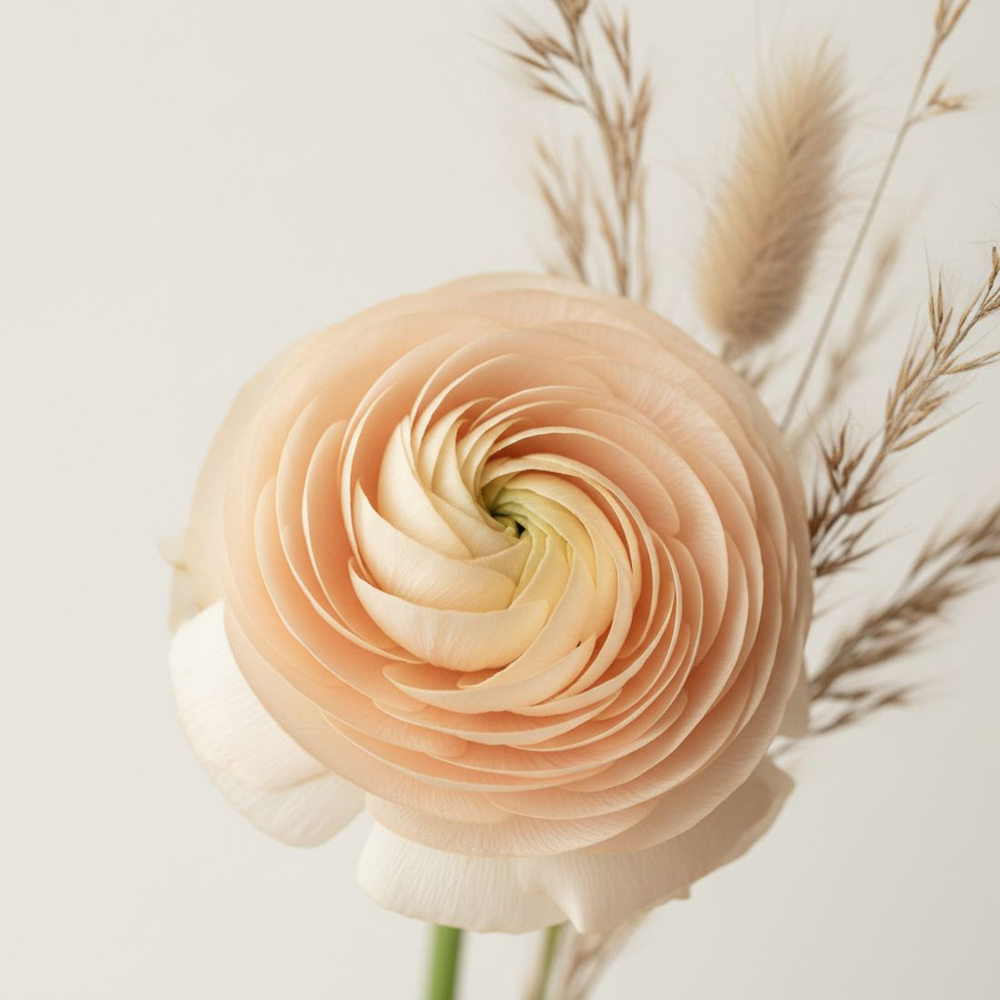

Une boutique de quartier sur la place de la Liberté, où l'on compose des bouquets de saison, pour un mardi ordinaire comme pour le plus beau jour.
Un bouquet pour dire merci, pour fêter quelque chose, ou juste pour la maison. Composé devant vous, avec les fleurs du moment.

Bouquets de mariée, décoration de table, boutonnières : chaque mariage est pensé avec les mariés, à leur image.

Baptêmes, réceptions, fêtes d'entreprise : des fleurs pour habiller vos moments importants. Parlons-en en boutique ou par téléphone.

4,6 ★
sur Google · 72 avis13 place de la Liberté
92250 La Garenne-Colombes
01 42 42 17 38
@lesbelles_lagarennecolombes
| Lundi | Fermé |
| Mardi – Vendredi | 10h–13h · 15h–19h30 |
| Samedi | 9h–13h · 15h–19h30 |
| Dimanche | 10h–13h |